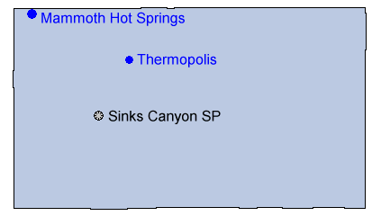

Wyoming

 Intermittent Spring
Intermittent Spring- Mammoth Hot Springs
- Thermopolis Hot Springs
 Sinks Canyon State Park
Sinks Canyon State Park Spirit Mountain Cave
Spirit Mountain Cave
There are many caves in Wyoming, but none of them is open to the public.
Intermittent SpringMammoth Hot SpringsThermopolis Hot SpringsSinks Canyon State ParkSpirit Mountain CaveThere are many caves in Wyoming, but none of them is open to the public.
 Geography and Geology
Geography and Geology Index
Index Topics
Topics Hierarchical
Hierarchical Countries
Countries Maps
Maps Search
Search